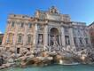
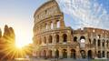
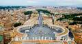
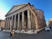
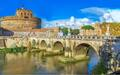
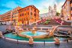
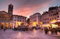
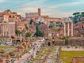

Multimédia
Nesta página encontra conteúdos multimédia.
Fotografias








Vídeo
Poesia
Roma acorda entre pedra e história,
com o Tibre a refletir a sua memória.
Entre praças, fontes e monumentos,
vive uma cidade feita de momentos.
Roma possui muitos monumentos e locais históricos.
O Coliseu é um dos símbolos mais conhecidos da cidade.